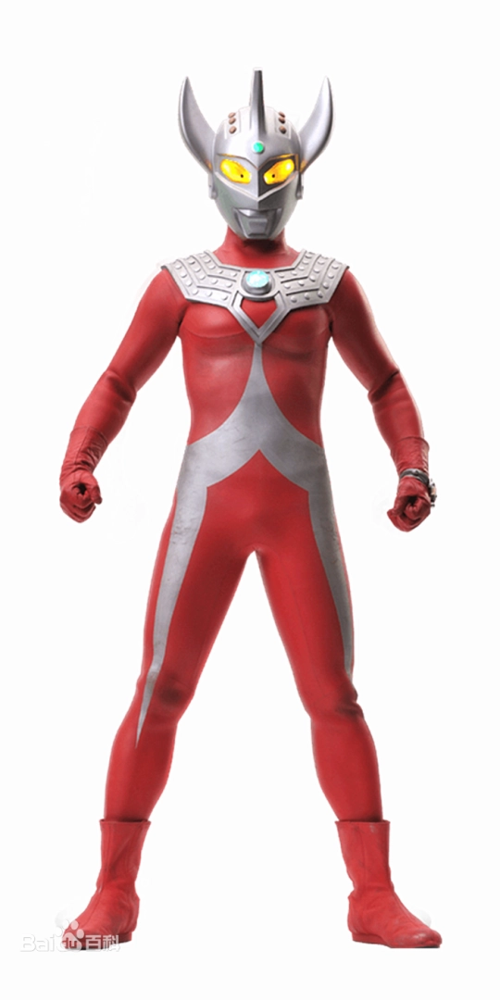
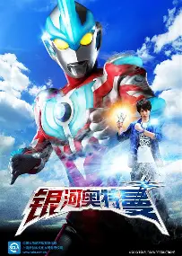
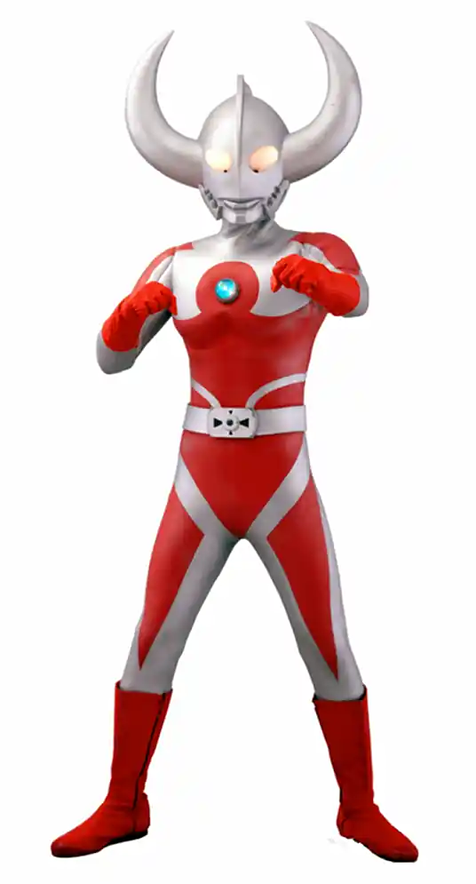
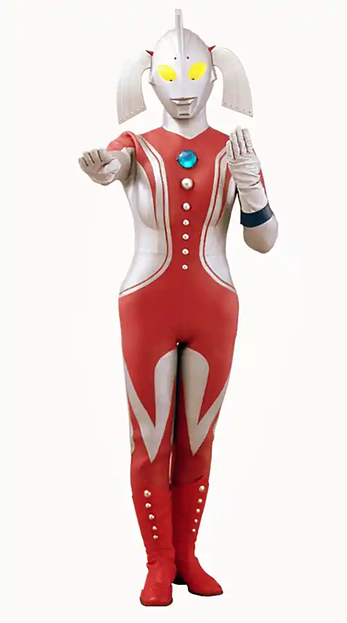

中文名奥特曼 外文名ウルトラマン Ultraman 别 名宇宙英雄、超人力霸王战士、咸蛋超人等 作品类型特摄、科幻、励志、动作 语 言日语 主要奖项星云赏 制片地区日本 导 演圆谷英二、圆谷一（等） 编 剧金城哲夫、长谷川圭一（等） 出品公司圆谷株式会社 拍摄地点富士山等地点 首播电视台TBS电视台、东京电视台 网络播放平台圆谷幻想、YouTube、哔哩哔哩、爱奇艺、腾讯视频、优酷 播出状态播出中 每集时长约 25 分钟 发行公司圆谷株式会社 首 作奥特曼 最新作提欧奥特曼

奥特之父（ウルトラの父），日本特摄剧《奥特曼》系列中的角色，出生于M78星云光之国，担任宇宙警备队大队长，与奥特之母育有泰罗奥特曼，家族特征为遗传性奥特之角，现有孙辈泰迦奥特曼。 [1] [11] [41]。首次登场于《艾斯奥特曼》第27话，由玉川伊佐男、福田大助等人饰演，西冈德马、石田太郎等人配音。 [1] [2] [41]。 奥特之父身年龄设定为16万岁，身高45米，体重5万吨， [1] [2]以银色与红色为主，头部生巨大弯角，胸前配有奥特勋章，蓄有白色胡须，整体威严庄重，尽显王者气场，他性格威严沉稳，慈爱宽厚，富有责任感与牺牲精神，处事公正果断，有父亲光线、父亲掌劈、父亲拳等技能。 [5] [6] [41] 奥特之父为拯救五位奥特兄弟与希波利特星人决战，因能量耗尽负伤；后又化身圣诞老人助力艾斯， [4-5] [35]并在《泰罗》《雷欧》《爱迪》中多次现身支援，指导战士、平息危机。 [8] [14] [32]他在奥特大战争中以究极之刃击败安培拉星人。 [15] [39]在梦比优斯系列中，他派遣梦比优斯前往地球，多次救援并协助其战胜强敌。 [38] [40] [44]面对贝利亚之乱，奥特之父虽旧伤复发落败，仍指挥全奥特战士迎战帝国军团。 [38]新生代时期，他在银河剧中化为火花人偶，在捷德篇中亲自牵制极恶贝利亚，为战局争取关键时间。 [10]在《奥特银河格斗》系列里，他以年轻时的 “健” 展现与贝利亚的过往，确立宇宙警备队体制； [44]后期统筹对抗阿布索留特一族，部署救援尤莉安，与奥特之王共商宇宙安危，始终以守护和平为己任，是光之国的精神与战力核心。 [45]

奥特之母（ウルトラの母），本名玛丽，是日本科幻特摄片《奥特曼》系列中的女性角色，于1973年4月6日播出的《泰罗奥特曼》首次登场。其人间体为绿源川子，由森繁子负责配音并饰演，皮套演员包括安富诚、太田智美等。作为光之国银十字军队长，奥特之母专职宇宙医疗救治工作，拥有母亲光束、母亲沐浴等治疗技能，并配备母亲之红、银十字勋章等装备 [29] [40-41]。 奥特之母在《泰罗奥特曼》中将泰罗生命赋予东光太郎，通过人间体绿源川子赠予其奥特徽章 [20] [23]，并曾复活被怪兽巴顿杀死的泰罗与佐菲 [42]。角色多次支援其他奥特战士，参与光之国高层决策行动 [36] [40]。 奥特之母设定以救治职能为核心，主要使用治疗光线及储存的治愈能量，极少涉及战斗技能 [35] [42]。其显著特征是头上有两个辫子，人间体绿源川子仅在《泰罗奥特曼》首尾两集登场，被称作"绿婆婆"，形象参考了东光太郎母亲的特征 [20] [23] [41]。

泰罗奥特曼是圆谷特摄剧《泰罗奥特曼》的主人公，是奥特之父与奥特之母的亲生儿子，奥特兄弟的第六位成员。泰罗的格斗能力十分出色，必杀技斯特利姆光线威力极大，拥有奥特兄弟之中最强的战斗能力 [109]，他的武器是泰罗手镯和手镯王冠，同时拥有能复原再生的奥特心脏。 [1] 泰罗奥特曼作为艾斯奥特曼的继任者来到地球，与青年东光太郎一心同体后加入ZAT队保卫地球和平 [62] ，与众多强敌展开战斗。在结束了保卫地球的任务之后，东光太郎将奥特徽章交还给奥特之母，独自一人在地球上继续开始旅游 [2]。 目前为宇宙警备队的首席教官 [1] [118] ，并育有一子泰迦奥特曼 [97]